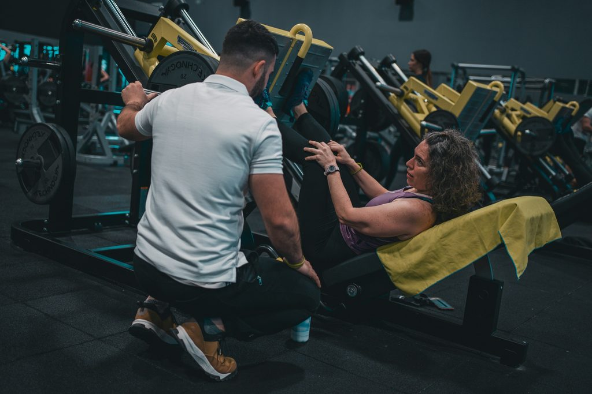

Physiotherapie Innsbruck · im Hallenbad Amras
Tauch ein. Komm in Bewegung.
P.H.I.T – Physiotherapie und individuelles Training. Behandlung, Trainingsbereich und Schwimmbecken unter einem Dach: Alles in einer Hand, für alle Altersgruppen.
P.H.I.T auf einen Blick
- 320m²Praxisfläche
- 160m²Trainingsbereich
- 4Spezialist:innen
- Unterwassertherapie im Hallenbad Amras


Was uns besonders macht
Therapie, wo das Wasser trägt.
Die Praxis liegt im 1. Stock des Städtischen Hallenbads Amras. Deshalb gehört bei uns Unterwassertherapie ganz selbstverständlich zum Angebot – im selben Gebäude wie Behandlung und Training.
-
Auftrieb
Leichter bewegen
Das Wasser nimmt dir einen Teil deines Körpergewichts ab. Gelenke und Wirbelsäule werden entlastet – Bewegungen, die an Land noch schwerfallen, lassen sich oft schon früher üben.
-
Widerstand
Dosiert kräftigen
Jede Bewegung trifft auf sanften, gleichmäßigen Widerstand. So trainierst du Kraft und Koordination genau in dem Tempo, das dir gerade guttut.
-
Ein Haus
Kurze Wege, ein Plan
Becken, Behandlungsräume und Trainingsbereich liegen unter einem Dach. Wir verbinden Unterwassertherapie mit Physiotherapie und Trainingstherapie an Land – aus einer Hand.
Leistungen
Zehn Wege zurück in die Bewegung.
-
 01
01Mobilisierende Physiotherapie
Gezielte Techniken, die eingeschränkte Gelenke und Gewebe Schritt für Schritt wieder beweglich machen.
-
 02
02Heilgymnastik & Heilmassage
Aktive Übungen und wohltuende Massage – die bewährte Basis, abgestimmt auf deine Beschwerden.
-
03
Elektrotherapie
Elektrische Reize als ergänzende Maßnahme – etwa zur Muskelaktivierung oder zur Schmerzlinderung.
-
 04
04Manuelle Lymphdrainage
Sanfte, rhythmische Griffe regen den Lymphabfluss an – zum Beispiel bei Schwellungen nach Verletzungen oder Operationen.
-
 05
05Unterwassertherapie
Bewegen mit Auftrieb – direkt im Hallenbad Amras, im selben Haus wie die Praxis.
Mehr zum Wasser -
 06
06Sportphysiotherapie & Return to Sport
Return to Sport und Return to Running: in klaren Etappen von der Verletzung zurück auf Laufstrecke, Piste oder Platz.
Sport & Reha -

07Medizinische Trainingstherapie
Betreutes Training im 160 m² großen Trainingsbereich – für Kraft, Stabilität und Belastbarkeit im Alltag.
-
 08
08Beckenbodenphysiotherapie
Diskret und fachkundig, für Frauen und Männer – mit Anna Gassner, MSc.
Zur Beckenboden-Seite -
09
Schwindel- & Vestibulartherapie (IVRT®)
Gezielte Übungen für dein Gleichgewichtssystem, wenn Schwindel den Alltag bestimmt – mit Simon Braun.
-
 10
10Komplexe Rückenschmerzen (CFT)
Cognitive Functional Therapy nach Prof. O'Sullivan: Wir betrachten Bewegung, Belastung und Lebensumstände gemeinsam – nicht nur die Wirbelsäule.


Schwerpunkt · Beckenbodentherapie Innsbruck
Beckenboden betrifft alle. Auch Männer.
Die Beckenbodenmuskulatur stabilisiert deine Körpermitte und wirkt bei essenziellen Körperfunktionen mit. Ob Schwangerschaft und Rückbildung, Inkontinenz oder eine Prostata-Operation: Anna Gassner, MSc, begleitet dich diskret, warm und ohne Tabus.
- Schwangerschaft & Rückbildung
- Inkontinenz
- Senkungszustände
- Rektusdiastase
- Prostatektomie & Adenomektomie
Sportphysiotherapie Innsbruck
Zurück in deinen Sport.
Kreuzband, Sehne, Muskel: Nach einer Verletzung geht es nicht nur darum, den Alltag wieder zu schaffen. Wir planen mit dir den Weg zurück ins Training – Etappe für Etappe.
- Konservative & post-OP Reha nach Kreuzbandriss
- Sehnen-, Kapsel-/Band- und Muskelverletzungen
- Return to Sport & Return to Running
- Medizinische Trainingstherapie auf 160 m²
- European Sports Physiotherapy (ESP)
- Laserbehandlung mit medizinischem Stablaser


Team
Vier Spezialist:innen. Ein Team.
Orthopädisch-traumatologisch, sportphysiotherapeutisch, Beckenboden, Schwindel: Jede:r bringt eigene Schwerpunkte mit – gemeinsam decken wir ein breites Spektrum ab.
-

Anna Gassner, MSc
„Ich begleite dich auf dem Weg, deinen eigenen Körper besser kennenzulernen und zu verstehen. Ich freue mich darauf, dir zu helfen, dein volles Potential auszuschöpfen.“
-

Armin Hauser
„Sei die beste Version deiner selbst! Ich unterstütze dich mit all meiner Erfahrung und physiotherapeutischen Möglichkeiten!“
-

Simon Klein
„Mich begeistert es besonders, deinen Körper genau unter die Lupe zu nehmen. Finden wir gemeinsam die Ursachen für deine Beschwerden und bringen dich zurück in einen beschwerdefreien Alltag oder Sport!“
-

Simon Braun
„Gezielt behandeln. Ganzheitlich denken. Moderne Physiotherapie mit Erfahrung und Empathie.“


Ablauf & Kosten
In vier Schritten zur Therapie.
Wir sind Wahltherapeut:innen. Das heißt: Du bezahlst die Behandlung bei uns und holst dir einen Teil von deiner Krankenkasse zurück.
-
1
Überweisung mitbringen
Lass dir von deiner Ärztin oder deinem Arzt eine Zuweisung bzw. Überweisung für Physiotherapie ausstellen.
-
2
Termin vereinbaren
Ruf uns an unter 0512 / 36 60 02 oder schreib an info@phit.cc.
-
3
Behandlung
Wir verrechnen Privattarife als Wahltherapeut:innen – eine Direktverrechnung mit der Kasse gibt es nicht.
-
4
Rechnung einreichen
Reich die Rechnung bei deiner Kasse ein und erhalte eine anteilige Rückerstattung – laut bisheriger Angabe ca. 55 € pro Therapiestunde. [BITTE PRÜFEN]
Räumlichkeiten & Training
320 m² zum Behandeln und Trainieren.
Davon sind 160 m² Trainingsbereich: hell, mit Rundbogenfenstern, Kraftgeräten und viel Platz auf der Matte. Hier geht die Therapie nahtlos ins betreute Training über.


Standort & Anfahrt · Physiotherapie Amras / Pradl
Mitten in Amras. Im Hallenbad.
Amraser Straße 3, 1. Stock6020 Innsbruck
im Städtischen Hallenbad Amras
- EingangHaupteingang Hallenbad, im 1. Stock links
- ParkenGratis Parkplätze hinter dem Gebäude
- ÖffisHaltestelle „Leipziger Platz“
- Öffnungszeiten[PLATZHALTER: Öffnungszeiten]
- Barrierefreiheit / Lift[PLATZHALTER: Barrierefreiheit / Lift]
Karriere · Raum zu vermieten
Dein Raum im Hallenbad.
Wir vermieten einen Physiotherapie-Raum an selbstständige Physiotherapeut:innen. Du arbeitest eigenständig – und trotzdem im Team.
Jetzt meldenDas bekommst du
- Freie Zeiteinteilung
- 160 m² Trainingsraum zur Mitbenutzung
- Eigener, ausgestatteter Therapieraum
- Bestehende Praxissoftware
- Top-Lage mit Öffis und Gratisparkplätzen
- Bestehender Patientenstamm & interdisziplinäres Arbeiten
- Marketing-Unterstützung und Listung auf der Website
- Gemeinschaftsküche & Pausenraum
- WLAN
Das bringst du mit
- Abgeschlossene Ausbildung in Physiotherapie
- Freude an der Selbstständigkeit
- Anspruch an hochwertige Betreuung
Häufige Fragen
Kurz beantwortet.
Brauche ich eine Überweisung?
Ja, bring bitte eine ärztliche Zuweisung bzw. Überweisung für Physiotherapie mit. Sie ist die Grundlage für die anteilige Rückerstattung durch deine Kasse.
Was zahlt die Krankenkasse?
Wir sind Wahltherapeut:innen und verrechnen Privattarife – eine Direktverrechnung mit der Kasse gibt es nicht. Du reichst die Rechnung ein und erhältst einen Teil zurück, laut bisheriger Angabe ca. 55 € pro Therapiestunde. [BITTE PRÜFEN]
Wo kann ich parken?
Gratis Parkplätze findest du direkt hinter dem Gebäude des Hallenbads Amras.
Wie komme ich mit den Öffis hin?
Die nächste Haltestelle ist „Leipziger Platz“. Im Hallenbad nimmst du den Haupteingang und gehst in den 1. Stock, die Praxis liegt links.
Gilt meine Überweisung auch für Beckenbodentherapie?
Ja. Eine normale Überweisung für Physiotherapie (z. B. PT03, Heilgymnastik) gilt auch für die Beckenbodentherapie. Sie wird wie Physiotherapie verrechnet.
Ist Beckenbodentherapie auch etwas für Männer?
Unbedingt. Der Beckenboden ist für jeden Menschen wichtig – zum Beispiel auch vor und nach einer Prostatektomie oder Adenomektomie. Mehr zur Beckenbodentherapie
Kontakt
Auftauchen. Melde dich.
Am schnellsten erreichst du uns telefonisch. Du kannst uns aber auch schreiben – wir melden uns bei dir.